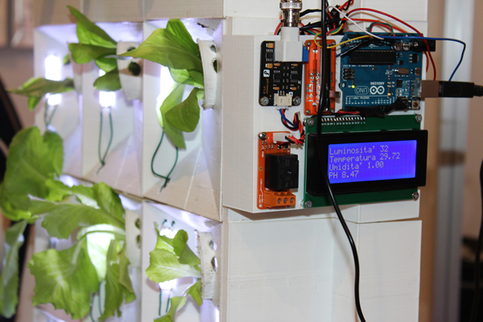
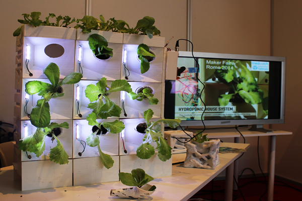
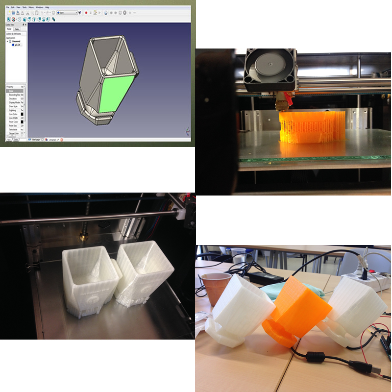
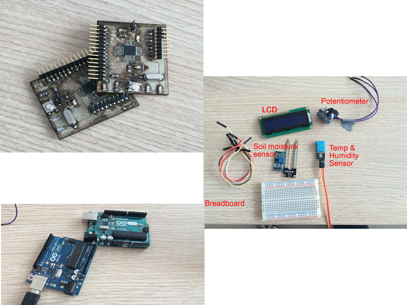

The assignment of this week is to propose a final project that integrates the range of units covered:
- what will it do?
- who's done what beforehand?
- what materials and components will be required?
- where will they come from?
- how much will it cost?
- what parts and systems will be made?
- what processes will be used?
- what tasks need to be completed?
- what questions need to be answered?
- what is the schedule?
- how will it be evaluated?
The final project will be a Modular Home Hydroponic system based on a new kind of user friendly scalable hydroponic systems. It allows people to grow plants in intelligent pots that have nice and modular design, and which health is continuously monitored in order to grow in optimal conditions.
For more details, check the project page
In the internet, I found many similar projects doing part or all the functionalities that I am planning to develop with my project. Actually I decided to follow inspiration and tutorial from the innovative hydroponic system developed by the Mediterranean FabLab in Salerno (Italy).
here are two picture of what they have realized:


For more details, check the project page on the medaarch here
On the other hand, I found many interesting information on this Wikipedia page
- PLA for 3D printing
- Electronic board – Satshakit composed of ATMEGA328P-AU microprosessor, cristal 16Mhz/18pF, green and yellow LED, switch, resistors, capacitors and pin headers
- Soil Hygrometer Detection Module Soil Moisture Sensor arduino compatibile
- Ambient temperature and humidity sensor DHT11
- LCD display HD44780
- Consumables
- 3D printing materials: 10€ of PLA
- Electronic board – Satshakit estimate 9.06 €
- Soil moisture sensor: 3€
- Ambient temperature and humidity sensor: 3,5€
- LCD display: 4€
- Consumables: 5€
- Total: 34,5€
- Plant pots will be made via 3D printing
- Electronic boards will be printed and assembled
- Application interface will be programmed
- The modular plant pots design will be re-adapted from an existing design
- The pots will be then 3D printed using PLA materials
- The electronic board that controls the sensors will be printed, assembled, and programmed
- All the sensors will be programmed in order to monitor plant health
- New application and interface will be developed to display and monitor plant health on PC
- Will the pots hold one on each other?
- Will the board manage many sensors
- How can I program all sensors to give data usable for plant monitoring
- Week 1-7 June: Pot design and Pot printing

- Week 8-14 June: - Electronic assembly

- Week 15-21 June:- Electronic programming - 3D printed pots: obligatory
- Electronic board: in case there are problems with electronic components, provide plan B to use arduino boards
- Electronic programming of sensors: Obligatory
- Application and Interface: optional